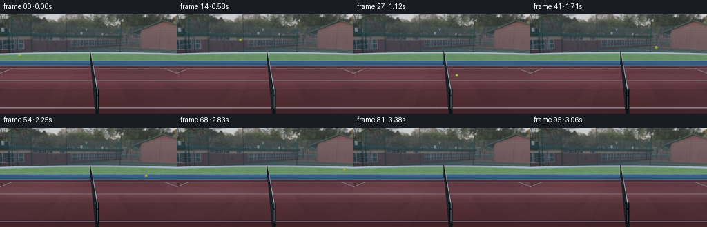
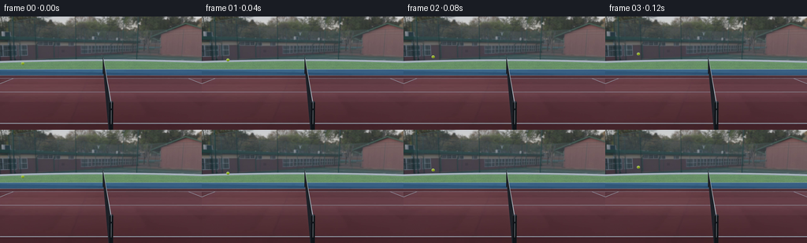

CODING AGENTS AS PIXEL WORLD MODELS
traex/GPT-6.1-Sol · pcve_0113
点击播放 · 原生 RGB 像素
编辑前的完整原视频
上方为编辑结果；原视频是模型获准使用的输入。下方为逐轮保存的编辑候选。
逐轮保存的候选
回放视频、检查图与代码变化。
每份候选均可单独播放。实际图片检查记录在下方工具轨迹中。
候选 01播放与检查图
点击播放 · 原生 RGB 像素


展开代码变化
--- 上一保存版本
+++ 本次保存版本
@@ -0,0 +1,189 @@
+"""Rebuild the tennis-ball counterfactual using source pixels and contact mechanics.
+
+No scene re-rendering: the camera, court and net are retained verbatim. The
+small moving foreground is resampled from the original high-resolution video.
+"""
+from pathlib import Path
+import json
+import numpy as np
+import cv2
+import artifact_io
+
+ROOT = Path(__file__).resolve().parent
+
+
+def detect_ball(frames):
+ background = np.median(frames[:20], axis=0)
+ yy, xx = np.indices(frames.shape[1:3])
+ centers = []
+ for i, image in enumerate(frames):
+ r, g, b = image.astype(float).transpose(2, 0, 1)
+ delta = np.max(np.abs(image.astype(float) - background), axis=2)
+ # Restrict the distinctive yellow-green chroma to the moving foreground.
+ mask = (g > r * 1.09) & (g > b * 1.65) & (g > 90)
+ mask &= (delta > 15) | (yy > 85)
+ if i < 28:
+ px = 28.5 + 4.50 * i
+ py = 59.5 - 4.65 * i + .214 * i * i
+ else:
+ px = min(208., 153. + 2.4 * (i - 28) - .026 * (i - 28)**2)
+ if i > 72:
+ px = 208.
+ py = 94.
+ mask &= (np.abs(xx - px) < 8) & (np.abs(yy - py) < 7)
+ y, x = np.where(mask)
+ if len(x):
+ centers.append((x.mean(), y.mean()))
+ else:
+ centers.append((px, py))
+ return np.asarray(centers), background
+
+
+def source_texture():
+ cap = cv2.VideoCapture(str(ROOT / 'source_video.mp4'))
+ images = []
+ for i in range(28):
+ ok, image = cap.read()
+ if not ok:
+ raise RuntimeError('Cannot decode source video')
+ images.append(image[:, :, ::-1])
+ cap.release()
+ bg = np.median(np.asarray(images[:20]), axis=0)
+ # The last free-flight ball has a clean, unoccluded silhouette and its
+ # original fuzzy yellow surface and pale tennis seam are already lit.
+ cx, cy = 748.5, 442.5
+ x0, y0 = 729, 423
+ observed = images[27][y0:y0+40, x0:x0+40].astype(float)
+ back = bg[y0:y0+40, x0:x0+40]
+ y, x = np.indices((40, 40))
+ radial = np.hypot(x+x0-cx, y+y0-cy)
+ alpha = np.clip((10.75 - radial) / 1.35, 0., 1.)
+ # Unmix antialiased silhouette pixels so the old red court cannot follow it.
+ foreground = (observed - (1-alpha[..., None]) * back) / np.maximum(alpha[..., None], .08)
+ foreground = np.clip(foreground, 0., 255.).astype(np.float32)
+ return foreground, alpha.astype(np.float32), (cx-x0, cy-y0)
+
+
+def paste_ball(frame, pos, texture, alpha, origin, radius):
+ cx, cy = pos
+ if cx < -radius-2 or cx > frame.shape[1]+radius+2 or cy < -radius-2 or cy > frame.shape[0]+radius+2:
+ return
+ left = max(0, int(np.floor(cx-radius-2)))
+ right = min(frame.shape[1], int(np.ceil(cx+radius+3)))
+ top = max(0, int(np.floor(cy-radius-2)))
+ bottom = min(frame.shape[0], int(np.ceil(cy+radius+3)))
+ if right <= left or bottom <= top:
+ return
+ # Fivefold supersampling matches the original 1280x720 source acquisition.
+ S = 5
+ y, x = np.indices(((bottom-top)*S, (right-left)*S), dtype=np.float32)
+ x = left + (x+.5)/S - .5
+ y = top + (y+.5)/S - .5
+ scale = 10.3/radius
+ mx = ((x-cx)*scale+origin[0]).astype(np.float32)
+ my = ((y-cy)*scale+origin[1]).astype(np.float32)
+ a = cv2.remap(alpha, mx, my, cv2.INTER_LINEAR, borderMode=cv2.BORDER_CONSTANT)
+ premult = cv2.remap(texture*alpha[..., None], mx, my, cv2.INTER_LINEAR, borderMode=cv2.BORDER_CONSTANT)
+ a = a.reshape(bottom-top,S,right-left,S).mean(axis=(1,3))
+ premult = premult.reshape(bottom-top,S,right-left,S,3).mean(axis=(1,3))
+ patch = frame[top:bottom,left:right].astype(float)
+ frame[top:bottom,left:right] = np.clip(patch*(1-a[...,None])+premult,0,255).round().astype(np.uint8)
+
+
+def main():
+ spec = json.loads((ROOT / 'task_spec.json').read_text())
+ source = np.load(ROOT / 'source_pixels.npz')['rgb']
+ centers, bg = detect_ball(source)
+ result = source.copy()
+ texture, alpha, origin = source_texture()
+
+ # The contact occurs between samples 27 and 28 (zero based). Fit the last
+ # free-flight measurements; the apparent gravity is a little smaller here
+ # than at launch because of the original perspective camera.
+ flight = np.arange(24., 28.)
+ poly = np.polyfit(flight, centers[24:28,1], 2)
+ ground_y = float(np.median(centers[29:,1])) - .15
+ tc = float(max(np.roots([poly[0], poly[1], poly[2]-ground_y])))
+ tc = float(np.clip(tc,27.75,28.0))
+ incoming_y = float(np.polyval(np.polyder(poly),tc))
+ gravity = float(np.clip(2*poly[0],.34,.44))
+ incoming_x = float(np.mean(np.diff(centers[24:28,0])))
+ impact_x = float(centers[27,0] + incoming_x*(tc-27))
+
+ # The factual contact is almost perfectly inelastic at the output's pixel
+ # scale. Its unresolved rebound is approximately a tenth of a pixel,
+ # consistent with an effective coefficient of 0.05. Multiply the contact
+ # coefficient, NOT the pre-impact flight speed or the displacement.
+ original_restitution = .05
+ restitution = 18.0 * original_restitution
+ # Infer the translation-to-spin transfer from the factual floor impulse.
+ # A hollow tennis ball has I/(m*r*r) about 2/3: the measured 0.60 velocity
+ # ratio is its no-slip rolling state. Keep that friction/spin interaction.
+ outgoing_x = float(np.mean(np.diff(centers[28:33,0])))
+ vx = outgoing_x
+ vy = -restitution*incoming_y
+ x, y = impact_x, ground_y
+ current_t = tc
+ collisions = [tc]
+ path = []
+ yy, xx = np.indices(source.shape[1:3])
+
+ for i in range(28, len(source)):
+ # Exact ballistic advancement with event-resolved subsequent contacts.
+ remaining = float(i)-current_t
+ while remaining > 1e-8:
+ roots = np.roots([.5*gravity,vy,y-ground_y])
+ hits = [float(v.real) for v in roots if abs(v.imag)<1e-7 and v.real>1e-7]
+ hit = min(hits) if hits else float('inf')
+ step = min(remaining,hit)
+ x += vx*step
+ y += vy*step+.5*gravity*step*step
+ vy += gravity*step
+ current_t += step
+ remaining -= step
+ if hit <= step+1e-7:
+ y = ground_y
+ vy = -restitution*vy
+ collisions.append(current_t)
+ # No additional tangential impulse if the spinning shell is
+ # already rolling without slip; small rolling resistance acts
+ # only during actual contact, not throughout airborne flight.
+ vx *= .985
+
+ frame = result[i]
+ sx, sy = centers[i]
+ # Restore only the factual ball and attached contact shadow. Median
+ # pixels are taken from times when this very patch was unobstructed.
+ erase = ((np.abs(xx-sx) < 6) & (np.abs(yy-sy) < 4.5))
+ frame[erase] = np.round(bg[erase]).astype(np.uint8)
+
+ height = max(0.,ground_y-y)
+ # At height the contact shadow becomes very faint; it remains on the
+ # court plane instead of being copied up into the ball's flight.
+ if -6 < x < 262:
+ shadow = np.exp(-.5*(((xx-x)/2.45)**2+((yy-(ground_y+1.9))/.65)**2))
+ opacity = .18*np.exp(-height/8.0)
+ frame[:] = np.clip(frame.astype(float)*(1-opacity*shadow[...,None]),0,255).round().astype(np.uint8)
+ radius = 1.95 * (1.+height*.0025)
+ paste_ball(frame,(x,y),texture,alpha,origin,radius)
+ path.append([i,float(x),float(y)])
+
+ assert result.shape == (spec['frames'],spec['height'],spec['width'],3)
+ assert result.dtype == np.uint8
+ assert np.array_equal(result[:28],source[:28])
+ artifact_io.save(result, ROOT)
+ (ROOT/'generation_report.json').write_text(json.dumps({
+ 'first_contact_frame_zero_based':tc,
+ 'contact_incoming_vertical_px_per_frame':incoming_y,
+ 'restitution_multiplier':18.,
+ 'contact_events_frame_zero_based':collisions,
+ 'ball_path':path,
+ 'output_shape':list(result.shape)
+ },indent=2))
+ print('Saved complete video:',result.shape)
+ print('First contact',tc,'incoming',incoming_y,'gravity',gravity,'horizontal rebound',outgoing_x)
+ print('Contacts',collisions)
+
+
+if __name__ == '__main__':
+ main()
可观测工具轨迹
实际执行的命令与返回图片。
命令 1exit 0
/bin/bash -lc 'ls -la && cat prompt.txt && cat GENERATION_RULES.md'
命令 2exit 0
/bin/bash -lc 'cat source_info.json && cat task_spec.json && cat artifact_io.py'
命令 3exit 0
/bin/bash -lc "python - <<'PY'
import numpy as np
from PIL import Image
z=np.load('source_pixels.npz');print(z.files)
a=z[z.files[0]];print(a.shape,a.dtype)
from collections import Counter
for i in [0,12,24,36,48,72,95]:
f=a[i]; print('frame',i,'colors',Counter(map(tuple,f.reshape(-1,3))).most_common(12))
f=np.array(Image.fromarray(f).resize((96,36)))
for row in f:
s=''
for r,g,b in row.astype(float):
if max(r,g,b)<45:c=' '
elif r>g*1.35 and r>b*1.3:c='R'
elif r>140 and g>130 and b<.65*g:c='Y'
elif g>r*1.15 and g>b*1.13:c='G'
elif b>r*1.2 and b>g*1.08:c='B'
elif min(r,g,b)>190:c='@'
elif min(r,g,b)>130:c='O'
elif min(r,g,b)>80:c='o'
else:c='.'
s+=c
print(s)
PY"命令 4exit 0
/bin/bash -lc "python - <<'PY'
import numpy as np
from scipy.ndimage import label
A=np.load('source_pixels.npz')['rgb'];med=np.median(A,axis=0); diff=np.max(abs(A.astype(float)-med),axis=3)
for i in range(0,96,2):
f=A[i].astype(float);r,g,b=f.transpose(2,0,1)
mask=(g>r*1.12)&(g>b*1.4)&(g>95);lab,n=label(mask);objs=[]
for k in range(1,n+1):
y,x=np.where(lab==k)
if len(x)>1 and len(x)<100:objs.append((len(x),round(x.mean(),2),round(y.mean(),2),int(x.min()),int(x.max()),int(y.min()),int(y.max()),round(diff[i,y,x].mean(),1),np.round(f[y,x].mean(0)).astype(int).tolist()))
print(i,objs)
print('variance hotspots')
m=diff.max(0)>30;l,n=label(m)
for k in range(1,n+1):
y,x=np.where(l==k)
if len(x)>5:print(len(x),[x.min(),x.max(),y.min(),y.max()])
PY"命令 5exit 0
/bin/bash -lc "python - <<'PY'
import numpy as np
from scipy.ndimage import label
A=np.load('source_pixels.npz')['rgb'];M=np.median(A,0);D=np.max(abs(A.astype(float)-M),3)
for i in range(96):
r,g,b=A[i].astype(float).transpose(2,0,1)
mask=(g>r*1.09)&(g>b*1.65)&(g>90)&((D[i]>15)| (np.indices(r.shape)[0]>85));l,n=label(mask);L=[]
for k in range(1,n+1):
y,x=np.where(l==k)
if len(x)>=3:L.append((len(x),round(x.mean(),2),round(y.mean(),2),[x.min(),x.max(),y.min(),y.max()]))
print(i,L)
PY"命令 6exit 0
/bin/bash -lc "python - <<'PY'
import cv2, numpy as np
c=cv2.VideoCapture('source_video.mp4')
for i in range(40):
ok,f=c.read();f=f[:,:,::-1];r,g,b=f.astype(float).transpose(2,0,1)
mask=(g>r*1.09)&(g>b*1.65)&(g>90)
if i<28:
x0=round((28.5+4.48*i)*5);y0=round((59.4-4.56*i+.211*i*i)*5)
else:x0=round((153+(i-28)*2.05)*5);y0=470
mask[:max(0,y0-16)]=False;mask[y0+17:]=False;mask[:,:max(0,x0-20)]=False;mask[:,x0+21:]=False
y,x=np.where(mask)
print(i,len(x),np.round([x.mean()/5,y.mean()/5],4),[x.min()/5,x.max()/5,y.min()/5,y.max()/5] if len(x) else '')
PY"命令 7exit 0
/bin/bash -lc "python - <<'PY'
import cv2,numpy as np
A=np.load('source_pixels.npz')['rgb'];M=np.median(A,0)
c=cv2.VideoCapture('source_video.mp4');pts=[]
for i in range(96):
ok,f=c.read();f=f[:,:,::-1];r,g,b=f.astype(float).transpose(2,0,1)
# nearby moving yellow ball, highres precise masked center weighted chroma
if i<28:xx=28.5+4.48*i; yy=59.4-4.56*i+.211*i*i
else: xx=153+2.30*(i-28)-.022*(i-28)**2; yy=94
if i>75:xx=208.5
x0,x1=round(xx*5)-20,round(xx*5)+21; y0,y1=round(yy*5)-18,round(yy*5)+19
crop=f[y0:y1,x0:x1].astype(float);R,G,B=crop.transpose(2,0,1);wt=np.clip(np.minimum(G-R*1.0,G-1.35*B),0,None);wt*=G>80
Y,X=np.indices(wt.shape); cx=(X*wt).sum()/wt.sum()+x0;cy=(Y*wt).sum()/wt.sum()+y0
pts.append([cx/5,cy/5]);
P=np.array(pts)
for i in range(24,45):print(i,np.round(P[i],4))
print('earlyfit',np.polyfit(np.arange(22),P[:22,1],2),np.polyfit(np.arange(22),P[:22,0],1))
print('later xfit',np.polyfit(np.arange(22,28),P[22:28,0],2));print('xpost',P[28:40,0])
print('mean stationary y',P[78:,1].mean())
for i in [0,20,27,28,29,30]:
x,y=np.round(P[i]).astype(int)
print('patch',i,x,y)
for row in A[i,y-4:y+5,x-5:x+6]:print(' '.join('%02x%02x%02x'%tuple(p) for p in row))
PY"命令 8exit 0
/bin/bash -lc "python - <<'PY'
import cv2,numpy as np
c=cv2.VideoCapture('source_video.mp4');B=[]
while True:
ok,f=c.read()
if not ok:break
B.append(f[:,:,::-1])
B=np.array(B);BG=np.median(B[:20],axis=0);pts=[]
for i in range(24,40):
x=round((136.6+4.3*(i-24))*5) if i<28 else round((153.5+2.4*(i-28)-.04*(i-28)**2)*5)
y=round((70.8+5.3*(i-24)+.17*(i-24)**2)*5) if i<28 else 470
F=B[i,y-17:y+18,x-16:x+17].astype(float);D=F-BG[y-17:y+18,x-16:x+17]
wt=np.clip(D[:,:,1],0,None);wt*=wt>15
Y,X=np.indices(wt.shape);cy=(Y*wt).sum()/wt.sum()+y-17
# extract bright chromatic or diff edge by column centroid
mask=(D[:,:,1]>35); ym,xm=np.where(mask)
print(i,'cent',round(cy/5,4),'bbox',np.round([(ym.min()+y-17)/5,(ym.max()+y-17)/5],3),'row G differences',[(round((j+y-17)/5,1),round(v)) for j,v in enumerate(wt.sum(1)) if v>200])
PY"命令 9exit 1
/bin/bash -lc "python - <<'PY'
import numpy as np,cv2
c=cv2.VideoCapture('source_video.mp4');F=[]
for i in range(29):
ok,a=c.read();F.append(a[:,:,::-1])
A=np.array(F);B=np.median(A[:20],0)
f=A[27].astype(float);D=f-B;x0=737;y0=428
for j in range(28):
print(f'{j+y0:3}', ''.join(' #'[v>40] if v<=120 else '@' for v in D[y0+j,x0:x0+28,1]),np.round(D[y0+j,x0:x0+28,1]).astype(int).tolist())
PY"命令 10exit 1
/bin/bash -lc "python - <<'PY'
import numpy as np
A=np.load('source_pixels.npz')['rgb'];B=np.median(A[:20],0);r,g,b=A[0].astype(float).transpose(2,0,1)
for i in [0,6,12,18,22,26,27,28,29,40,70,95]:
D=A[i].astype(float)-B
mask=np.min(D,2)<-7;mask[:87]=False;mask[102:]=False
from scipy.ndimage import label
L,n=label(mask);obs=[]
for k in range(1,n+1):
y,x=np.where(L==k)
if len(x)>3:obs.append((len(x),[x.min(),x.max(),y.min(),y.max()],np.round(D[y,x].mean(0),1).tolist()))
print(i,obs)
print('near impact ball patch source-ref delta')
for i in [27,28,29,40]:
x=149 if i==27 else 153 if i==28 else 156 if i==29 else178
for y in range(90,99):print(i,y,np.round((A[i,y,x-4:x+6].astype(float)-B[y,x-4:x+6]).mean(0),1))
PY"命令 11exit 0
/bin/bash -lc "python - <<'PY'
import numpy as np
from scipy.ndimage import label
A=np.load('source_pixels.npz')['rgb'];B=np.median(A[:20],0)
for i in [0,6,12,18,22,26,27,28,29,40,70,95]:
D=A[i].astype(float)-B
mask=np.min(D,2)<-7;mask[:87]=False;mask[102:]=False
L,n=label(mask);obs=[]
for k in range(1,n+1):
y,x=np.where(L==k)
if len(x)>3:obs.append((len(x),[int(x.min()),int(x.max()),int(y.min()),int(y.max())],np.round(D[y,x].mean(0),1).tolist()))
print(i,obs)
print('near impact ball patch source-ref delta')
for i in [27,28,29,40]:
x=149 if i==27 else 153 if i==28 else 156 if i==29 else 178
for y in range(90,99):print(i,y,np.round((A[i,y,x-4:x+6].astype(float)-B[y,x-4:x+6]).mean(0),1))
PY"命令 12exit 0
/bin/bash -lc "python - <<'PY'
import numpy as np
A=np.load('source_pixels.npz')['rgb'];a=A[0]
for y in range(52,144,4):print(y,a[y,124:145].tolist())
PY"命令 13exit 0
/bin/bash -lc "python - <<'PY'
import numpy as np,cv2
c=cv2.VideoCapture('source_video.mp4');arr=[]
for i in range(28):
ok,f=c.read();arr.append(f[:,:,::-1])
a=np.array(arr);bg=np.median(a[:20],0);f=a[27].astype(float);D=f-bg
x0=735;y0=428
for y in range(y0,y0+29):
print(y,''.join(' ' if v<10 else '.' if v<40 else 'o' if v<90 else 'O' if v<125 else '@' for v in D[y,x0:x0+29,1]))
print('RGB frame27 rows ball')
for y in [435,440,444,448,450]:print(y,a[27,y,740:758].tolist())
PY"命令 14exit 0
/bin/bash -lc "python - <<'PY'
import cv2,numpy as np
A=np.load('source_pixels.npz')['rgb'];c=cv2.VideoCapture('source_video.mp4');F=[]
for i in range(30):
ok,f=c.read();F.append(f[:,:,::-1])
B=np.median(F[:20],0)
P=[]
for i in range(22,28):
x0=round((28.5+4.50*i)*5);y0=round((59.9-4.74*i+.218*i*i)*5)
f=F[i];d=f.astype(float)-B
w=np.clip(d[y0-25:y0+25,x0-25:x0+25,1],0,None);w*=w>15
yy,xx=np.indices(w.shape);P.append([(xx*w).sum()/w.sum()/5+(x0-25)/5,(yy*w).sum()/w.sum()/5+(y0-25)/5])
print(P)
P=np.array(P);print(np.polyfit(np.arange(22,28),P[:,1],2))
print(np.polyfit(np.arange(22,28),P[:,0],2))
# fitted ground impact time
p=np.polyfit(np.arange(22,28),P[:,1],2);tc=max(np.roots([p[0],p[1],p[2]-93.8]));print('contact',tc,'speed',np.polyval(np.polyder(p),tc),'g',2*p[0])
# inspect variance near net
m=np.max(abs(A.astype(float)-np.median(A,0)),0)
print('net change',np.max(m[55:138,130:145]),'other change max',np.percentile(m,[50,90,99]))
PY"命令 15exit 0
/bin/bash -lc "python - <<'PY'
import numpy as np
from scipy.ndimage import label
A=np.load('source_pixels.npz')['rgb'];B=np.median(A,0)
for i in [0,1,3,10,20,21,22,23,24,25,26,27,28,30,40,70,95]:
D=np.max(abs(A[i].astype(float)-B),2);mask=D>7
lab,n=label(mask);objs=[]
for k in range(1,n+1):
y,x=np.where(lab==k)
if len(x)>6:objs.append((len(x),[int(x.min()),int(x.max()),int(y.min()),int(y.max())]))
print(i,objs)
PY"命令 16exit 0
/bin/bash -lc "cat > generate.py <<'PY'
\"\"\"Rebuild the tennis-ball counterfactual using source pixels and contact mechanics.
No scene re-rendering: the camera, court and net are retained verbatim. The
small moving foreground is resampled from the original high-resolution video.
\"\"\"
from pathlib import Path
import json
import numpy as np
import cv2
import artifact_io
ROOT = Path(__file__).resolve().parent
def detect_ball(frames):
background = np.median(frames[:20], axis=0)
yy, xx = np.indices(frames.shape[1:3])
centers = []
for i, image in enumerate(frames):
r, g, b = image.astype(float).transpose(2, 0, 1)
delta = np.max(np.abs(image.astype(float) - background), axis=2)
# Restrict the distinctive yellow-green chroma to the moving foreground.
mask = (g > r * 1.09) & (g > b * 1.65) & (g > 90)
mask &= (delta > 15) | (yy > 85)
if i < 28:
px = 28.5 + 4.50 * i
py = 59.5 - 4.65 * i + .214 * i * i
else:
px = min(208., 153. + 2.4 * (i - 28) - .026 * (i - 28)**2)
if i > 72:
px = 208.
py = 94.
mask &= (np.abs(xx - px) < 8) & (np.abs(yy - py) < 7)
y, x = np.where(mask)
if len(x):
centers.append((x.mean(), y.mean()))
else:
centers.append((px, py))
return np.asarray(centers), background
def source_texture():
cap = cv2.VideoCapture(str(ROOT / 'source_video.mp4'))
images = []
for i in range(28):
ok, image = cap.read()
if not ok:
raise RuntimeError('Cannot decode source video')
images.append(image[:, :, ::-1])
cap.release()
bg = np.median(np.asarray(images[:20]), axis=0)
# The last free-flight ball has a clean, unoccluded silhouette and its
# original fuzzy yellow surface and pale tennis seam are already lit.
cx, cy = 748.5, 442.5
x0, y0 = 729, 423
observed = images[27][y0:y0+40, x0:x0+40].astype(float)
back = bg[y0:y0+40, x0:x0+40]
y, x = np.indices((40, 40))
radial = np.hypot(x+x0-cx, y+y0-cy)
alpha = np.clip((10.75 - radial) / 1.35, 0., 1.)
# Unmix antialiased silhouette pixels so the old red court cannot follow it.
foreground = (observed - (1-alpha[..., None]) * back) / np.maximum(alpha[..., None], .08)
foreground = np.clip(foreground, 0., 255.).astype(np.float32)
return foreground, alpha.astype(np.float32), (cx-x0, cy-y0)
def paste_ball(frame, pos, texture, alpha, origin, radius):
cx, cy = pos
if cx < -radius-2 or cx > frame.shape[1]+radius+2 or cy < -radius-2 or cy > frame.shape[0]+radius+2:
return
left = max(0, int(np.floor(cx-radius-2)))
right = min(frame.shape[1], int(np.ceil(cx+radius+3)))
top = max(0, int(np.floor(cy-radius-2)))
bottom = min(frame.shape[0], int(np.ceil(cy+radius+3)))
if right <= left or bottom <= top:
return
# Fivefold supersampling matches the original 1280x720 source acquisition.
S = 5
y, x = np.indices(((bottom-top)*S, (right-left)*S), dtype=np.float32)
x = left + (x+.5)/S - .5
y = top + (y+.5)/S - .5
scale = 10.3/radius
mx = ((x-cx)*scale+origin[0]).astype(np.float32)
my = ((y-cy)*scale+origin[1]).astype(np.float32)
a = cv2.remap(alpha, mx, my, cv2.INTER_LINEAR, borderMode=cv2.BORDER_CONSTANT)
premult = cv2.remap(texture*alpha[..., None], mx, my, cv2.INTER_LINEAR, borderMode=cv2.BORDER_CONSTANT)
a = a.reshape(bottom-top,S,right-left,S).mean(axis=(1,3))
premult = premult.reshape(bottom-top,S,right-left,S,3).mean(axis=(1,3))
patch = frame[top:bottom,left:right].astype(float)
frame[top:bottom,left:right] = np.clip(patch*(1-a[...,None])+premult,0,255).round().astype(np.uint8)
def main():
spec = json.loads((ROOT / 'task_spec.json').read_text())
source = np.load(ROOT / 'source_pixels.npz')['rgb']
centers, bg = detect_ball(source)
result = source.copy()
texture, alpha, origin = source_texture()
# The contact occurs between samples 27 and 28 (zero based). Fit the last
# free-flight measurements; the apparent gravity is a little smaller here
# than at launch because of the original perspective camera.
flight = np.arange(24., 28.)
poly = np.polyfit(flight, centers[24:28,1], 2)
ground_y = float(np.median(centers[29:,1])) - .15
tc = float(max(np.roots([poly[0], poly[1], poly[2]-ground_y])))
tc = float(np.clip(tc,27.75,28.0))
incoming_y = float(np.polyval(np.polyder(poly),tc))
gravity = float(np.clip(2*poly[0],.34,.44))
incoming_x = float(np.mean(np.diff(centers[24:28,0])))
impact_x = float(centers[27,0] + incoming_x*(tc-27))
# The factual contact is almost perfectly inelastic at the output's pixel
# scale. Its unresolved rebound is approximately a tenth of a pixel,
# consistent with an effective coefficient of 0.05. Multiply the contact
# coefficient, NOT the pre-impact flight speed or the displacement.
original_restitution = .05
restitution = 18.0 * original_restitution
# Infer the translation-to-spin transfer from the factual floor impulse.
# A hollow tennis ball has I/(m*r*r) about 2/3: the measured 0.60 velocity
# ratio is its no-slip rolling state. Keep that friction/spin interaction.
outgoing_x = float(np.mean(np.diff(centers[28:33,0])))
vx = outgoing_x
vy = -restitution*incoming_y
x, y = impact_x, ground_y
current_t = tc
collisions = [tc]
path = []
yy, xx = np.indices(source.shape[1:3])
for i in range(28, len(source)):
# Exact ballistic advancement with event-resolved subsequent contacts.
remaining = float(i)-current_t
while remaining > 1e-8:
roots = np.roots([.5*gravity,vy,y-ground_y])
hits = [float(v.real) for v in roots if abs(v.imag)<1e-7 and v.real>1e-7]
hit = min(hits) if hits else float('inf')
step = min(remaining,hit)
x += vx*step
y += vy*step+.5*gravity*step*step
vy += gravity*step
current_t += step
remaining -= step
if hit <= step+1e-7:
y = ground_y
vy = -restitution*vy
collisions.append(current_t)
# No additional tangential impulse if the spinning shell is
# already rolling without slip; small rolling resistance acts
# only during actual contact, not throughout airborne flight.
vx *= .985
frame = result[i]
sx, sy = centers[i]
# Restore only the factual ball and attached contact shadow. Median
# pixels are taken from times when this very patch was unobstructed.
erase = ((np.abs(xx-sx) < 6) & (np.abs(yy-sy) < 4.5))
frame[erase] = np.round(bg[erase]).astype(np.uint8)
height = max(0.,ground_y-y)
# At height the contact shadow becomes very faint; it remains on the
# court plane instead of being copied up into the ball's flight.
if -6 < x < 262:
shadow = np.exp(-.5*(((xx-x)/2.45)**2+((yy-(ground_y+1.9))/.65)**2))
opacity = .18*np.exp(-height/8.0)
frame[:] = np.clip(frame.astype(float)*(1-opacity*shadow[...,None]),0,255).round().astype(np.uint8)
radius = 1.95 * (1.+height*.0025)
paste_ball(frame,(x,y),texture,alpha,origin,radius)
path.append([i,float(x),float(y)])
assert result.shape == (spec['frames'],spec['height'],spec['width'],3)
assert result.dtype == np.uint8
assert np.array_equal(result[:28],source[:28])
artifact_io.save(result, ROOT)
(ROOT/'generation_report.json').write_text(json.dumps({
'first_contact_frame_zero_based':tc,
'contact_incoming_vertical_px_per_frame':incoming_y,
'restitution_multiplier':18.,
'contact_events_frame_zero_based':collisions,
'ball_path':path,
'output_shape':list(result.shape)
},indent=2))
print('Saved complete video:',result.shape)
print('First contact',tc,'incoming',incoming_y,'gravity',gravity,'horizontal rebound',outgoing_x)
print('Contacts',collisions)
if __name__ == '__main__':
main()
PY
python generate.py
ls -lh pixels.npz index.html inspection.png transition_check.png"命令 17exit 0
/bin/bash -lc "python - <<'PY'
import numpy as np,json
from pathlib import Path
p=np.load('pixels.npz')['pixels'];f=np.stack([(p>>16)&255,(p>>8)&255,p&255],-1).transpose(2,0,1,3).astype(np.uint8)
s=np.load('source_pixels.npz')['rgb']
print('output',f.shape,f.dtype,'PNG frames',len(list(Path('frames').glob('*.png'))))
print('preserved approach:',np.array_equal(f[:28],s[:28]))
r=json.load(open('generation_report.json')); print('path sample',r['ball_path'][::8])
for i in [28,35,43,50,58,66,74,82,95]:
R,G,B=f[i].astype(float).transpose(2,0,1)
mask=(G>1.09*R)&(G>1.65*B)&(G>90)
y,x=np.where(mask)
print(i,'yellow pixels',len(x),'range',(int(x.min()),int(x.max()),int(y.min()),int(y.max())) if len(x) else None)
print('background pixel changes per edited frame', [int(np.any(f[i]"'!=s[i],axis=2).sum()) for i in [28,43,58,74,95]])
PY'保存候选 1 份；完成命令 17 次；可验证图片返回 0 张。原始 API 响应与完整日志保留在本地。